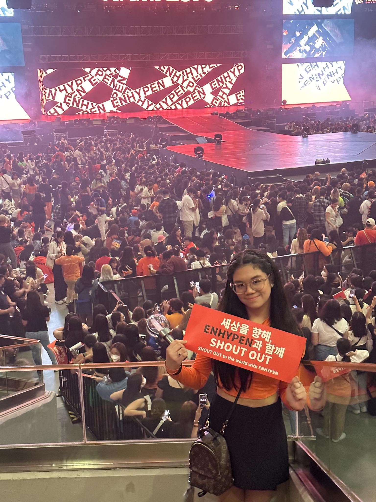
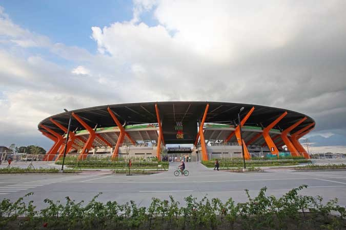

The Araneta Coliseum is also known as the "Smart Araneta Coliseum" due to sponsorhsips. This indoor arena was designed by Dominador Lacson Lugtu. It has a seating capacity of 16,500.
FUN FACT: Did you know that the Smart Araneta Coliseum held an Enhypen fanmeet on 12/03/22? This event is why Enhypen came to the Philippines for the first time!

MOA Arena
Mall of Asia Arena, famously known as "MOA Arena", has a seating capacity of 15,000. If you include a full capacity (seating and standing), it can hold up to 20,000 people. It is an indoor arena inside SM Mall of Asia. This venue is where Enhypen held their first concert in the Philippines, and it was a three day concert! It was held on 02/03/23, 02/04/23, and 02/05/23.
FUN FACT: The person in the picture is me!! Yes! I saw Enhypen on 02/04/23! It was an incredible experience seeing my favorites hehe.

NCC Stadium
New Clark City Stadium, its abbreviation being "NCC Stadium", is an outdoor stadium. It's seating capacity is 20,000. However, the standing capacity is exactly the same. This makes the capacity a total of 40,000. This venue is where Enhypen will be having their second concert on 02/03/24. What's really cute is that Enhypen's second concert (02/03/24) is just one year apart from their first (02/03/23-02/05/23).
FUN FACT: I got tickets for their second concert! I will be seeing Enhypen again this February 3rd! I can't wait hehe.